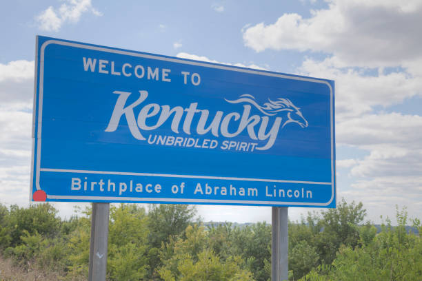

Aspects of Kentucky
The state of Kentucky is known for many things. Probably the most obvious is horse racing. Kentucky is the horse racing capital of the world. Every year on the first weekend in May, millions from around the world join in to watch the Kentucky Derby. Even the Queen of England is known to make an apperance.
Another sporting even that is highly popular (and this all depends on if you live in a specific city) is the University of Kentucky's basketball and football games. These events bring in thousands of viewer both live and on telivision. One of their biggest rivals is the University of Louisville. Louisville is also the home of Sullivan University, a school that is well known for its cullinary arts progam, techology and design deparmants and much more.
For car fans, ther is also the Corvette Museum in Bowling Green. This musseum goes through the history of Corvettes, has a simulation of what it is like to drive one of these sports cars and for the food lovers, plenty to eat as well!
Outside of these, there is also the Lexington Comic and Toy convention that happens in March or May. This event brings all sorts of celeberties to the Lexington area and is one of the most fun conventions to attend! This event tends to have guests from cartoons and TV shows like Smallville, Power Rangers and Winnie the Pooh, movies and video games. Even WWE Superstars come make an apperance at the Lexington Comic and Toy convention!
Another aspect of Kentucky is that our state bird is a cardinel. This is due to the bird calling Kentucky its native habitat. This bird is also the state bird of 7 other states but since its home is originaly Kentucky, that gives it a special place. Other interesting animals that can be found here are deer, red foxes, raccoons and woodchucks.
And to end this on a delicious note, for you food and drink lovers out there, Kentucky is home to some of the best hot browns and bourbon you will ever taste. The boubon is freshly made here and the hotbrowns are made specially for the Derby. One final food that originated here is Kentucky Fried Chicken. KFC has made its mark by starting here and opening many franchise chains across the world.